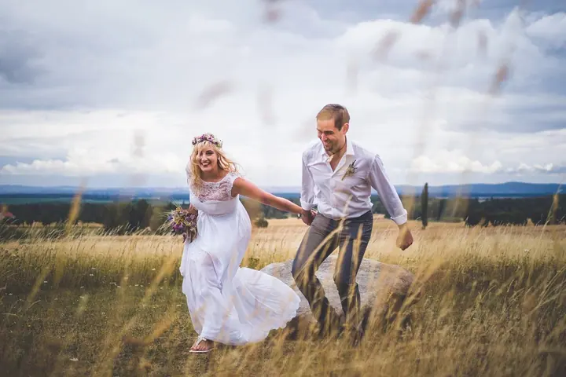
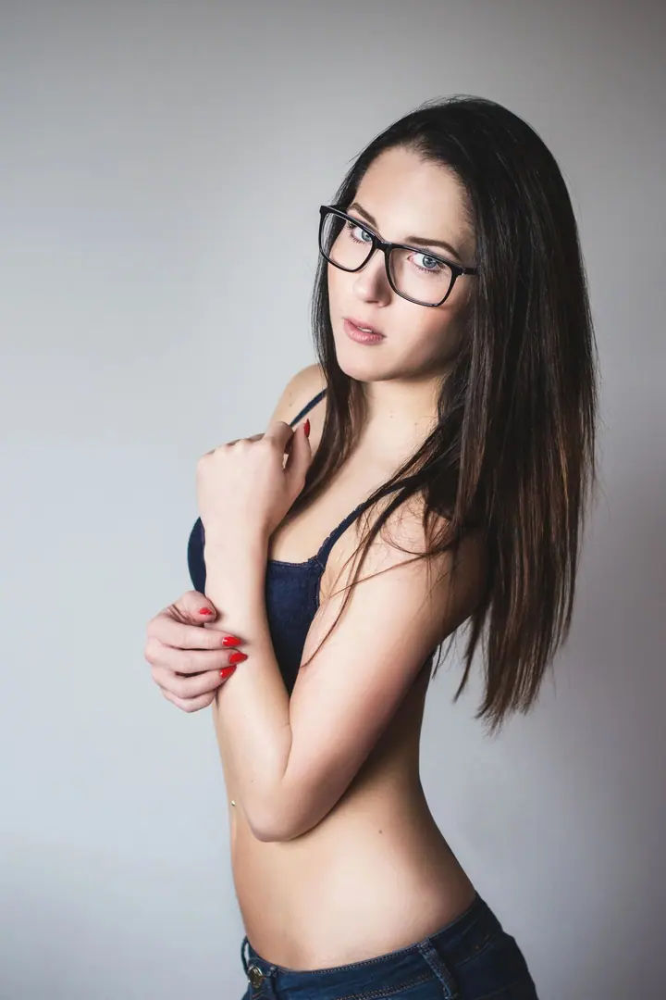
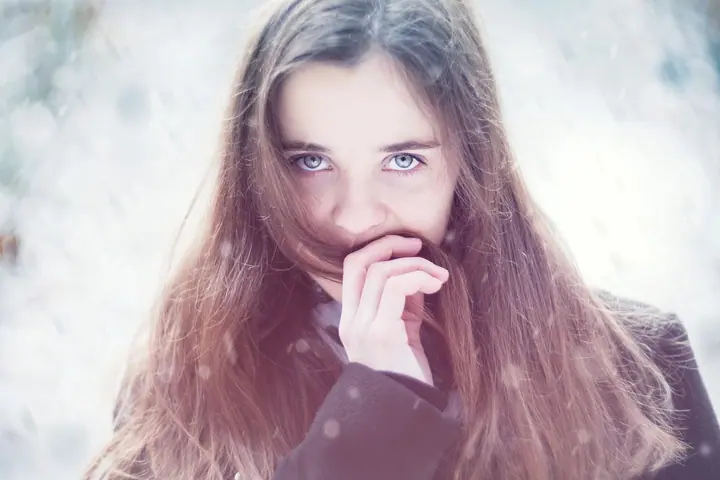

01 / 04
Svatby
Fotím celý svatební den nenápadně, takže si mě všimnete hlavně tehdy, když budete chtít. Na celodenní svatbu dojedu kamkoli po republice i dál. Cena od 15 000 Kč.
Zeptat se na termín→





Fotím a natáčím svatby, plesy i portréty
Zeptat se na termín →(01) Ahoj
Jmenuji se Jakub Štěpán a fotím a natáčím hlavně svatby a maturitní plesy . Moc mě ale baví i portréty a vlastně cokoli dalšího, co se dá zvládnout s foťákem nebo kamerou. Nejčastěji mě najdete v Praze a na Loučeni.
(02) Co dělám
01 / 04
Fotím celý svatební den nenápadně, takže si mě všimnete hlavně tehdy, když budete chtít. Na celodenní svatbu dojedu kamkoli po republice i dál. Cena od 15 000 Kč.
Zeptat se na termín→02 / 04
Fotím maturitní plesy, firemní akce a další události. Pro firmy připravuji i propagační fotky. Cena od 9 000 Kč.
Zeptat se na termín→03 / 04
Lifestylové a byznys portréty, párové, rodinné a těhotenské fotky, ale i glamour a akty. Cena od 3 000 Kč.
Zeptat se na termín→Dále nabízím
Natáčím svatební filmy a propagační videa pro firmy, letecké záběry pořizuji dronem. Svatební video od 20 000 Kč.
↗(03) Portfolio
Kliknutím fotku zvětšíte · fotografie jsou ilustrační
(04) Postup
Od první zprávy po hotovou galerii.
Krok 1 z 4
Pošlete mi pár slov o tom, co plánujete, kdy a kde. Odpovím co nejdřív.
Krok 2 z 4
Probereme vaši představu, rozsah focení nebo natáčení a to, jestli chcete fotky, video, nebo obojí.
Krok 3 z 4
V den focení přijedu včas a pracuji v klidu a nenápadně, ať se můžete věnovat sobě a svým hostům.
Krok 4 z 4
Hotové fotky dostanete ve webové galerii. Když budete chtít, rád zajistím i tisk nebo fotoobrazy.

Na svatbě si mě všimnete, jen když budete chtít.
(05) Za objektivem
Nejčastěji se na mě obracíte se svatbami, maturitními plesy a dalšími akcemi. Vedle toho fotím portréty, rodiny, páry, těhotenské fotky, produkty i nemovitosti a pro firmy dělám propagační fotky a videa. Když na něco nebudu mít čas nebo se na to nebudu cítit, rád vám doporučím kolegu, který to zvládne lépe.
Fotím i natáčím na Sony A1 se světelnými pevnými objektivy, letecké záběry pořizuji dronem DJI Mavic 4 Pro. Fotky upravuji v Lightroomu a Photoshopu, videa stříhám v DaVinci Resolve. Menší zakázky mívám hotové klidně už druhý den, u větších to obvykle netrvá déle než tři týdny.
Mám za sebou i umělecké projekty. Díky projektu HUMAN EYE dnes často fotím detaily duhovek, v projektu Akty z dronu jsem si vyzkoušel jiný úhel pohledu. Některé moje starší botanické fotky najdete v databázi Pladias a v Botanické fotogalerii.
Jakub
Jakub Štěpán · Svatební fotograf a kameraman
Na fotkách začínám pracovat co nejdřív. U menších zakázek je můžete mít už druhý den, když mám práce víc, obvykle to netrvá déle než 3 týdny.
Nejčastěji se pohybuji v Praze a na Loučeni. Na větší focení, třeba celodenní svatbu, dojedu po celé ČR a klidně i dál. U menších se většinou také najde rozumné řešení.
Pokud se nedomluvíme jinak, předávám fotky digitálně ve webové galerii. S tiskem ale rád pomohu nebo ho přímo zajistím.
Ano, napište si o něj a pošlu vám ho elektronicky. Hodí se na focení rodiny, páru, k Vánocům i k narozeninám.
(07) Kontakt
Napište pár vět o tom, co si představujete, a termín, který se vám hodí.